En bref
Blizzard a annoncé plus de 600 nouvelles recettes, sans publier la liste complète. Cette fiche rassemble les 401 recettes de Couture relevées dans les fichiers du jeu (client 1.60.1.70862, consultés le 12 novembre 2026). Les noms et les compétences requises viennent des fichiers du jeu. L’obtention indiquée « inconnu » reste à confirmer. Les tableaux sont groupés par palier de compétence requise. Quand l’obtention, la source ou la zone n’est pas indiquée dans les données consultées, la cellule le dit clairement. Aucun taux de butin n’est repris, aucun n’était indiqué.[1][2][4][3]
Points clés
- 401 recettes de Couture listées ci-dessous, d’après les fichiers du jeu (client 1.60.1.70862, 12 novembre 2026) ; l’obtention « inconnu » reste à confirmer.[4] Données du jeu (client 1.60.1.70862)
- Obtention indiquée dans les fichiers du jeu : formateur 91, butin 18, quête 5, réputation 39, inconnu 248.[4] Données du jeu (client 1.60.1.70862)
- Blizzard n’a pas publié la liste complète des recettes, ni les formateurs, vendeurs, prix ou taux de butin.[1][2]
- Composants de 401 recettes et 113 matériaux liés à leur fiche « où le trouver » (fichiers du jeu).[5] Données du jeu (client 1.60.1.70862)
Comment lire cette liste
Cette liste n’est pas officielle. Blizzard n’a pas publié le détail des recettes de ce métier (vendeurs, formateurs, monstres, zones, prix, taux de butin). Les noms et les compétences ci-dessous viennent des fichiers du jeu (client 1.60.1.70862). L’obtention « inconnu » reste à confirmer. Le nom français est celui de la localisation du jeu lorsqu’il a été trouvé ; à défaut, le nom anglais est utilisé dans les deux langues. « Formateur » couvre aussi les recettes indiquées comme apprises automatiquement avec le métier. Une page d’ensemble déjà en ligne, Recettes et plans avancés (/fr/metiers/recettes-et-plans-avances/), rappelle les règles officielles d’obtention et les recettes à butin déjà présentées par zone.[1][2][4][3]
- 401 recettes listées pour Couture.[4] Données du jeu (client 1.60.1.70862)
- Répartition dans les fichiers du jeu : formateur 91, butin 18, quête 5, réputation 39, inconnu 248.[4] Données du jeu (client 1.60.1.70862)
- Zone renseignée pour 18 recette(s) ; non indiquée pour les autres.[4] Données du jeu (client 1.60.1.70862)
Compétence 1–75 — 71 recettes (données du jeu)
| Recette | Compétence requise | Obtention | Source | Zone | Statut |
|---|---|---|---|---|---|
| Rouleau d'étoffe de lin | 1 | formateur | appris automatiquement avec le métier | non indiqué | données du jeu |
| Chemise marron en lin | 1 | formateur | appris automatiquement avec le métier | non indiqué | données du jeu |
| Bannière de faction | 1 | formateur | maître de métier (non nommé) | non indiqué | données du jeu |
| Sac en lin | 1 | formateur | appris automatiquement avec le métier | non indiqué | données du jeu |
| Cape en lin | 1 | formateur | appris automatiquement avec le métier | non indiqué | données du jeu |
| Pantalon en lin écru | 1 | formateur | appris automatiquement avec le métier | non indiqué | données du jeu |
| Chemise blanche en lin | 1 | formateur | maître de métier (non nommé) | non indiqué | données du jeu |
| Sac de composants en lin | 5 | inconnu | non indiqué | non indiqué | données du jeu — obtention à confirmer |
| Robe rouge en lin | 25 | inconnu | non indiqué | non indiqué | données du jeu — obtention à confirmer |
| Gilet bleu en lin | 35 | inconnu | non indiqué | non indiqué | données du jeu — obtention à confirmer |
| Gilet rouge en lin | 35 | inconnu | non indiqué | non indiqué | données du jeu — obtention à confirmer |
| Gilet marron en lin | 39 | formateur | maître de métier (non nommé) | non indiqué | données du jeu |
| Chemise bleue en lin | 41 | formateur | maître de métier (non nommé) | non indiqué | données du jeu |
| Pantalon marron en lin | 41 | formateur | maître de métier (non nommé) | non indiqué | données du jeu |
| Robe marron en lin | 41 | formateur | maître de métier (non nommé) | non indiqué | données du jeu |
| Gants en lin épais | 41 | formateur | maître de métier (non nommé) | non indiqué | données du jeu |
| Ceinture en lin | 41 | formateur | maître de métier (non nommé) | non indiqué | données du jeu |
| Chemise rouge en lin | 41 | formateur | maître de métier (non nommé) | non indiqué | données du jeu |
| Jupe simple | 41 | formateur | maître de métier (non nommé) | non indiqué | données du jeu |
| Bottes en lin écru | 41 | formateur | maître de métier (non nommé) | non indiqué | données du jeu |
| Robe blanche en lin | 41 | formateur | maître de métier (non nommé) | non indiqué | données du jeu |
| Robe bleue en lin | 45 | inconnu | non indiqué | non indiqué | données du jeu — obtention à confirmer |
| Corde fil-tempête azur | 50 | réputation | Druides et druidesses de la Noctegriffe (Amical) | non indiqué | données du jeu |
| Crispins fil-tempête azur | 50 | réputation | Druides et druidesses de la Noctegriffe (Amical) | non indiqué | données du jeu |
| Corde fil-tempête nuageuse | 50 | réputation | Druides et druidesses de la Noctegriffe (Amical) | non indiqué | données du jeu |
| Crispins fil-tempête nuageux | 50 | réputation | Druides et druidesses de la Noctegriffe (Amical) | non indiqué | données du jeu |
| Écharpe d’arcaniste novice | 50 | inconnu | non indiqué | non indiqué | données du jeu — obtention à confirmer |
| Écharpe ardente de novice | 50 | inconnu | non indiqué | non indiqué | données du jeu — obtention à confirmer |
| Sac rouge en lin | 50 | inconnu | non indiqué | non indiqué | données du jeu — obtention à confirmer |
| Brassards verts en lin | 51 | formateur | maître de métier (non nommé) | non indiqué | données du jeu |
| Cape en lin renforcé | 51 | formateur | maître de métier (non nommé) | non indiqué | données du jeu |
| Protège-mains fil-tempête azur | 55 | réputation | Druides et druidesses de la Noctegriffe (Amical) | non indiqué | données du jeu |
| Chaussures fil-tempête azur | 55 | réputation | Druides et druidesses de la Noctegriffe (Amical) | non indiqué | données du jeu |
| Protège-mains fil-tempête nuageux | 55 | réputation | Druides et druidesses de la Noctegriffe (Amical) | non indiqué | données du jeu |
| Chaussures fil-tempête nuageuses | 55 | réputation | Druides et druidesses de la Noctegriffe (Amical) | non indiqué | données du jeu |
| Gilet barbare en lin | 56 | formateur | maître de métier (non nommé) | non indiqué | données du jeu |
| Chemise verte en lin | 56 | formateur | maître de métier (non nommé) | non indiqué | données du jeu |
| Bottes en lin | 56 | formateur | maître de métier (non nommé) | non indiqué | données du jeu |
| Jambières fil-tempête azur | 60 | réputation | Druides et druidesses de la Noctegriffe (Honoré) | non indiqué | données du jeu |
| Gilet fil-tempête azur | 60 | réputation | Druides et druidesses de la Noctegriffe (Honoré) | non indiqué | données du jeu |
| Jambières fil-tempête nuageuses | 60 | réputation | Druides et druidesses de la Noctegriffe (Honoré) | non indiqué | données du jeu |
| Gilet fil-tempête nuageux | 60 | réputation | Druides et druidesses de la Noctegriffe (Honoré) | non indiqué | données du jeu |
| Bottes des flammes | 60 | inconnu | non indiqué | non indiqué | données du jeu — obtention à confirmer |
| Bottes nacrées | 60 | inconnu | non indiqué | non indiqué | données du jeu — obtention à confirmer |
| Bottes immaculées | 60 | inconnu | non indiqué | non indiqué | données du jeu — obtention à confirmer |
| Bottes ombreuses | 60 | inconnu | non indiqué | non indiqué | données du jeu — obtention à confirmer |
| Bottes brillantes | 60 | inconnu | non indiqué | non indiqué | données du jeu — obtention à confirmer |
| Bottes soyeuses | 60 | inconnu | non indiqué | non indiqué | données du jeu — obtention à confirmer |
| Culottes en lin cousu main | 61 | formateur | maître de métier (non nommé) | non indiqué | données du jeu |
| Rouleau d'étoffe de laine | 65 | formateur | maître de métier (non nommé) | non indiqué | données du jeu |
| Kilt simple | 66 | formateur | maître de métier (non nommé) | non indiqué | données du jeu |
| Sac en laine | 66 | formateur | maître de métier (non nommé) | non indiqué | données du jeu |
| Kilt coloré | 70 | inconnu | non indiqué | non indiqué | données du jeu — obtention à confirmer |
| Sac de composants en laine | 70 | inconnu | non indiqué | non indiqué | données du jeu — obtention à confirmer |
| Bottes en lin à semelle souple | 71 | formateur | maître de métier (non nommé) | non indiqué | données du jeu |
| Cape en laine | 71 | formateur | maître de métier (non nommé) | non indiqué | données du jeu |
| Salopette bleue | 75 | inconnu | non indiqué | non indiqué | données du jeu — obtention à confirmer |
| Robe des flammes filigranée | 75 | butin | Jergosh the Invoker ; Rhahk'Zor ; Gilnid ; Fel Steed / Shadow Charger | Ragefire Chasm ; Shadowfang Keep ; The Deadmines | données du jeu |
| Robe nacrée filigranée | 75 | butin | Bazzalan ; Cookie ; Fel Steed / Shadow Charger | Ragefire Chasm ; Shadowfang Keep ; The Deadmines | données du jeu |
| Robe immaculée filigranée | 75 | butin | Sneed ; Fel Steed / Shadow Charger | Shadowfang Keep ; The Deadmines | données du jeu |
| Robe ombreuse filigranée | 75 | butin | Bazzalan ; Fel Steed / Shadow Charger | Ragefire Chasm ; Shadowfang Keep | données du jeu |
| Robe brillante filigranée | 75 | butin | Cookie ; Fel Steed / Shadow Charger | Shadowfang Keep ; The Deadmines | données du jeu |
| Robe soyeuse filigranée | 75 | butin | Gilnid ; Fel Steed / Shadow Charger | Shadowfang Keep ; The Deadmines | données du jeu |
| Gants des flammes | 75 | inconnu | non indiqué | non indiqué | données du jeu — obtention à confirmer |
| Sac vert en laine | 75 | inconnu | non indiqué | non indiqué | données du jeu — obtention à confirmer |
| Gants nacrés | 75 | inconnu | non indiqué | non indiqué | données du jeu — obtention à confirmer |
| Gants immaculés | 75 | inconnu | non indiqué | non indiqué | données du jeu — obtention à confirmer |
| Bottes rouges en laine | 75 | inconnu | non indiqué | non indiqué | données du jeu — obtention à confirmer |
| Gants ombreux | 75 | inconnu | non indiqué | non indiqué | données du jeu — obtention à confirmer |
| Gants brillants | 75 | inconnu | non indiqué | non indiqué | données du jeu — obtention à confirmer |
| Gants soyeux | 75 | inconnu | non indiqué | non indiqué | données du jeu — obtention à confirmer |
Compétence 76–150 — 99 recettes (données du jeu)
| Recette | Compétence requise | Obtention | Source | Zone | Statut |
|---|---|---|---|---|---|
| Gilet vert en laine | 76 | formateur | maître de métier (non nommé) | non indiqué | données du jeu |
| Gants en laine épaisse | 76 | formateur | maître de métier (non nommé) | non indiqué | données du jeu |
| Robe grise en laine | 80 | inconnu | non indiqué | non indiqué | données du jeu — obtention à confirmer |
| Cape en laine épaisse | 80 | inconnu | non indiqué | non indiqué | données du jeu — obtention à confirmer |
| Robe verte en laine | 81 | formateur | maître de métier (non nommé) | non indiqué | données du jeu |
| Écharpe des flammes | 85 | inconnu | non indiqué | non indiqué | données du jeu — obtention à confirmer |
| Chemise grise en laine | 85 | formateur | maître de métier (non nommé) | non indiqué | données du jeu |
| Écharpe nacrée | 85 | inconnu | non indiqué | non indiqué | données du jeu — obtention à confirmer |
| Écharpe immaculée | 85 | inconnu | non indiqué | non indiqué | données du jeu — obtention à confirmer |
| Écharpe ombreuse | 85 | inconnu | non indiqué | non indiqué | données du jeu — obtention à confirmer |
| Écharpe brillante | 85 | inconnu | non indiqué | non indiqué | données du jeu — obtention à confirmer |
| Écharpe soyeuse | 85 | inconnu | non indiqué | non indiqué | données du jeu — obtention à confirmer |
| Cape brodée de perles | 86 | formateur | maître de métier (non nommé) | non indiqué | données du jeu |
| Bottes en laine | 86 | formateur | maître de métier (non nommé) | non indiqué | données du jeu |
| Robe d'adepte supérieur | 90 | inconnu | non indiqué | non indiqué | données du jeu — obtention à confirmer |
| Sac rouge en laine | 90 | inconnu | non indiqué | non indiqué | données du jeu — obtention à confirmer |
| Epaulières renforcées en laine | 95 | inconnu | non indiqué | non indiqué | données du jeu — obtention à confirmer |
| Chemise bleue d'apparat | 95 | inconnu | non indiqué | non indiqué | données du jeu — obtention à confirmer |
| Chemise verte d'apparat | 95 | inconnu | non indiqué | non indiqué | données du jeu — obtention à confirmer |
| Jambières des flammes filigranées | 100 | butin | Ghamoo-ra ; Targorr the Dread | Blackfathom Deeps ; The Stockade | données du jeu |
| Jambières nacrées filigranées | 100 | butin | Fel Steed / Shadow Charger | Shadowfang Keep | données du jeu |
| Jambières immaculées filigranées | 100 | butin | Edwin VanCleef | The Deadmines | données du jeu |
| Jambières ombreuses filigranées | 100 | butin | Lady Sarevess | Blackfathom Deeps | données du jeu |
| Jambières brillantes filigranées | 100 | butin | Edwin VanCleef ; Fel Steed / Shadow Charger | Shadowfang Keep ; The Deadmines | données du jeu |
| Jambières soyeuses filigranées | 100 | butin | Fel Steed / Shadow Charger ; Ghamoo-ra | Blackfathom Deeps ; Shadowfang Keep | données du jeu |
| Diadème des flammes | 100 | inconnu | non indiqué | non indiqué | données du jeu — obtention à confirmer |
| Diadème nacré | 100 | inconnu | non indiqué | non indiqué | données du jeu — obtention à confirmer |
| Gants du phénix | 100 | inconnu | non indiqué | non indiqué | données du jeu — obtention à confirmer |
| Pantalon du phénix | 100 | inconnu | non indiqué | non indiqué | données du jeu — obtention à confirmer |
| Diadème immaculé | 100 | inconnu | non indiqué | non indiqué | données du jeu — obtention à confirmer |
| Diadème ombreux | 100 | inconnu | non indiqué | non indiqué | données du jeu — obtention à confirmer |
| Diadème brillant | 100 | inconnu | non indiqué | non indiqué | données du jeu — obtention à confirmer |
| Diadème soyeux | 100 | inconnu | non indiqué | non indiqué | données du jeu — obtention à confirmer |
| Epaulières à double couture en laine | 101 | formateur | maître de métier (non nommé) | non indiqué | données du jeu |
| Pantalon en laine épaisse | 101 | formateur | maître de métier (non nommé) | non indiqué | données du jeu |
| Chemise rouge d'apparat | 101 | formateur | maître de métier (non nommé) | non indiqué | données du jeu |
| Robe blanche en laine | 101 | formateur | maître de métier (non nommé) | non indiqué | données du jeu |
| Rouleau d'étoffe de soie | 105 | formateur | maître de métier (non nommé) | non indiqué | données du jeu |
| Chemise jaune vif | 110 | inconnu | non indiqué | non indiqué | données du jeu — obtention à confirmer |
| Robe des flammes | 110 | inconnu | non indiqué | non indiqué | données du jeu — obtention à confirmer |
| Robe nacrée | 110 | inconnu | non indiqué | non indiqué | données du jeu — obtention à confirmer |
| Robe immaculée | 110 | inconnu | non indiqué | non indiqué | données du jeu — obtention à confirmer |
| Robe ombreuse | 110 | inconnu | non indiqué | non indiqué | données du jeu — obtention à confirmer |
| Robe brillante | 110 | inconnu | non indiqué | non indiqué | données du jeu — obtention à confirmer |
| Robe soyeuse | 110 | inconnu | non indiqué | non indiqué | données du jeu — obtention à confirmer |
| Mules en soie d'araignée | 115 | inconnu | non indiqué | non indiqué | données du jeu — obtention à confirmer |
| Bottes en soie d'araignée | 116 | formateur | maître de métier (non nommé) | non indiqué | données du jeu |
| Gants de méditation | 117 | formateur | maître de métier (non nommé) | non indiqué | données du jeu |
| Gants azur en soie | 120 | inconnu | non indiqué | non indiqué | données du jeu — obtention à confirmer |
| Chemise noire en soie | 120 | inconnu | non indiqué | non indiqué | données du jeu — obtention à confirmer |
| Mains des ténèbres | 120 | inconnu | non indiqué | non indiqué | données du jeu — obtention à confirmer |
| Robe de sorcier inférieur | 122 | formateur | maître de métier (non nommé) | non indiqué | données du jeu |
| Chaperon azur en soie | 125 | formateur | maître de métier (non nommé) | non indiqué | données du jeu |
| Diadème des flammes filigrané | 125 | butin | Gelihast ; Baron Aquanis ; Aku'mai | Blackfathom Deeps | données du jeu |
| Diadème nacré filigrané | 125 | butin | Aku'mai | Blackfathom Deeps | données du jeu |
| Diadème immaculé filigrané | 125 | butin | Bazil Thredd | The Stockade | données du jeu |
| Diadème ombreux filigrané | 125 | butin | Lorgus Jett ; Old Serra'kis ; Twilight Lord Kelris | Blackfathom Deeps | données du jeu |
| Diadème brillant filigrané | 125 | butin | Bazil Thredd | The Stockade | données du jeu |
| Diadème soyeux filigrané | 125 | butin | Gelihast ; Lorgus Jett ; Old Serra'kis | Blackfathom Deeps | données du jeu |
| Jambières des flammes | 125 | inconnu | non indiqué | non indiqué | données du jeu — obtention à confirmer |
| Jambières nacrées | 125 | inconnu | non indiqué | non indiqué | données du jeu — obtention à confirmer |
| Jambières immaculées | 125 | inconnu | non indiqué | non indiqué | données du jeu — obtention à confirmer |
| Robe d'Arcana | 125 | inconnu | non indiqué | non indiqué | données du jeu — obtention à confirmer |
| Jambières ombreuses | 125 | inconnu | non indiqué | non indiqué | données du jeu — obtention à confirmer |
| Jambières brillantes | 125 | inconnu | non indiqué | non indiqué | données du jeu — obtention à confirmer |
| Sac de composants en soie | 125 | quête | I Need a Tailor | non indiqué | données du jeu |
| Jambières soyeuses | 125 | inconnu | non indiqué | non indiqué | données du jeu — obtention à confirmer |
| Gants de vraie foi | 125 | inconnu | non indiqué | non indiqué | données du jeu — obtention à confirmer |
| Pantalon azur en soie | 127 | formateur | maître de métier (non nommé) | non indiqué | données du jeu |
| Bottes des ténèbres | 127 | formateur | maître de métier (non nommé) | non indiqué | données du jeu |
| Capuche d'enchanteur | 130 | inconnu | non indiqué | non indiqué | données du jeu — obtention à confirmer |
| Armure verte en soie | 130 | inconnu | non indiqué | non indiqué | données du jeu — obtention à confirmer |
| Bandeau en soie | 130 | formateur | maître de métier (non nommé) | non indiqué | données du jeu |
| Chemise blanche de bretteur | 130 | formateur | maître de métier (non nommé) | non indiqué | données du jeu |
| Chaperon des ombres | 135 | inconnu | non indiqué | non indiqué | données du jeu — obtention à confirmer |
| Gilet azur en soie | 137 | formateur | maître de métier (non nommé) | non indiqué | données du jeu |
| Petit sac en soie | 137 | formateur | maître de métier (non nommé) | non indiqué | données du jeu |
| Cape azur en soie | 140 | inconnu | non indiqué | non indiqué | données du jeu — obtention à confirmer |
| Mules noires | 140 | inconnu | non indiqué | non indiqué | données du jeu — obtention à confirmer |
| Rouleau de tisse-mage | 140 | formateur | maître de métier (non nommé) | non indiqué | données du jeu |
| Bottes de l'enchanteur | 140 | inconnu | non indiqué | non indiqué | données du jeu — obtention à confirmer |
| Jambières terrestres | 140 | inconnu | non indiqué | non indiqué | données du jeu — obtention à confirmer |
| Mules embrasées | 140 | inconnu | non indiqué | non indiqué | données du jeu — obtention à confirmer |
| Chemise blanche habillée | 140 | formateur | maître de métier (non nommé) | non indiqué | données du jeu |
| Mules écumeuses | 140 | inconnu | non indiqué | non indiqué | données du jeu — obtention à confirmer |
| Sac vert en soie | 140 | inconnu | non indiqué | non indiqué | données du jeu — obtention à confirmer |
| Mules radieuses | 140 | inconnu | non indiqué | non indiqué | données du jeu — obtention à confirmer |
| Rouet | 140 | inconnu | non indiqué | non indiqué | données du jeu — obtention à confirmer |
| Veste de smoking | 140 | inconnu | non indiqué | non indiqué | données du jeu — obtention à confirmer |
| Pantalon de smoking | 140 | inconnu | non indiqué | non indiqué | données du jeu — obtention à confirmer |
| Robe blanche de mariée | 140 | inconnu | non indiqué | non indiqué | données du jeu — obtention à confirmer |
| Cape cramoisie en soie | 145 | inconnu | non indiqué | non indiqué | données du jeu — obtention à confirmer |
| Mules terrestres en soie | 145 | inconnu | non indiqué | non indiqué | données du jeu — obtention à confirmer |
| Chemise rouge de bretteur | 145 | formateur | maître de métier (non nommé) | non indiqué | données du jeu |
| Ceinture de l'araignée | 145 | inconnu | non indiqué | non indiqué | données du jeu — obtention à confirmer |
| Gilet terrestre | 147 | formateur | maître de métier (non nommé) | non indiqué | données du jeu |
| Sac noir en soie | 150 | inconnu | non indiqué | non indiqué | données du jeu — obtention à confirmer |
| Chaperon terrestre en soie | 150 | inconnu | non indiqué | non indiqué | données du jeu — obtention à confirmer |
| Riche chemise violette en soie | 150 | inconnu | non indiqué | non indiqué | données du jeu — obtention à confirmer |
Compétence 151–225 — 112 recettes (données du jeu)
| Recette | Compétence requise | Obtention | Source | Zone | Statut |
|---|---|---|---|---|---|
| Ceinture azur en soie | 152 | formateur | maître de métier (non nommé) | non indiqué | données du jeu |
| Ceinture cramoisie en soie | 152 | formateur | maître de métier (non nommé) | non indiqué | données du jeu |
| Epaulières d'azur | 155 | inconnu | non indiqué | non indiqué | données du jeu — obtention à confirmer |
| Epaulières cramoisies en soie | 155 | inconnu | non indiqué | non indiqué | données du jeu — obtention à confirmer |
| Chemise verte de fête | 155 | inconnu | non indiqué | non indiqué | données du jeu — obtention à confirmer |
| Epaulières vertes en soie | 157 | formateur | maître de métier (non nommé) | non indiqué | données du jeu |
| Ceinture terrestre en soie | 160 | inconnu | non indiqué | non indiqué | données du jeu — obtention à confirmer |
| Gants terrestres en soie | 160 | inconnu | non indiqué | non indiqué | données du jeu — obtention à confirmer |
| Longue cape en soie | 162 | formateur | maître de métier (non nommé) | non indiqué | données du jeu |
| Protège-mains noirs | 165 | inconnu | non indiqué | non indiqué | données du jeu — obtention à confirmer |
| Chemise noire de bretteur | 165 | inconnu | non indiqué | non indiqué | données du jeu — obtention à confirmer |
| Gilet cramoisi en soie | 165 | formateur | maître de métier (non nommé) | non indiqué | données du jeu |
| Crispins terrestres en soie | 165 | inconnu | non indiqué | non indiqué | données du jeu — obtention à confirmer |
| Protège-mains embrasés | 165 | inconnu | non indiqué | non indiqué | données du jeu — obtention à confirmer |
| Protège-mains écumeux | 165 | inconnu | non indiqué | non indiqué | données du jeu — obtention à confirmer |
| Cape glaciale | 165 | inconnu | non indiqué | non indiqué | données du jeu — obtention à confirmer |
| Protège-mains radieux | 165 | inconnu | non indiqué | non indiqué | données du jeu — obtention à confirmer |
| Ceinture de l'étoile | 165 | inconnu | non indiqué | non indiqué | données du jeu — obtention à confirmer |
| Robe de puissance | 167 | formateur | maître de métier (non nommé) | non indiqué | données du jeu |
| Robe cramoisie en soie | 170 | inconnu | non indiqué | non indiqué | données du jeu — obtention à confirmer |
| Épaulières terrestres en soie | 170 | inconnu | non indiqué | non indiqué | données du jeu — obtention à confirmer |
| Capuche fil-tempête azur | 175 | réputation | Kirin Tor (Amical) | non indiqué | données du jeu |
| Épaulettes fil-tempête azur | 175 | réputation | Kirin Tor (Amical) | non indiqué | données du jeu |
| Capuche fil-tempête nuageuse | 175 | réputation | Cercle terrestre (Amical) | non indiqué | données du jeu |
| Épaulettes fil-tempête nuageuses | 175 | réputation | Cercle terrestre (Amical) | non indiqué | données du jeu |
| Culotte cramoisie en soie | 175 | formateur | maître de métier (non nommé) | non indiqué | données du jeu |
| Pantalon noir en tisse-mage | 177 | formateur | maître de métier (non nommé) | non indiqué | données du jeu |
| Gilet noir en tisse-mage | 177 | formateur | maître de métier (non nommé) | non indiqué | données du jeu |
| Chemise orange en tisse-mage | 180 | formateur | maître de métier (non nommé) | non indiqué | données du jeu |
| Pantalon rouge en tisse-mage | 180 | inconnu | non indiqué | non indiqué | données du jeu — obtention à confirmer |
| Gilet rouge en tisse-mage | 180 | inconnu | non indiqué | non indiqué | données du jeu — obtention à confirmer |
| Masque blanc de bandit | 180 | inconnu | non indiqué | non indiqué | données du jeu — obtention à confirmer |
| Robe noire en tisse-mage | 182 | formateur | maître de métier (non nommé) | non indiqué | données du jeu |
| Gants cramoisis en soie | 182 | formateur | maître de métier (non nommé) | non indiqué | données du jeu |
| Pantalon en tisse-ombre | 182 | formateur | maître de métier (non nommé) | non indiqué | données du jeu |
| Chemise orange martiale | 185 | inconnu | non indiqué | non indiqué | données du jeu — obtention à confirmer |
| Gants en étoffe-tempête | 185 | quête | I Need a Tailor | non indiqué | données du jeu |
| Pantalon en étoffe-tempête | 185 | inconnu | non indiqué | non indiqué | données du jeu — obtention à confirmer |
| Gants noirs en tisse-mage | 187 | formateur | maître de métier (non nommé) | non indiqué | données du jeu |
| Robe en tisse-ombre | 187 | formateur | maître de métier (non nommé) | non indiqué | données du jeu |
| Corde noire | 190 | inconnu | non indiqué | non indiqué | données du jeu — obtention à confirmer |
| Bourse enchantée en tisse-mage | 190 | inconnu | non indiqué | non indiqué | données du jeu — obtention à confirmer |
| Corde embrasée | 190 | inconnu | non indiqué | non indiqué | données du jeu — obtention à confirmer |
| Corde écumeuse | 190 | inconnu | non indiqué | non indiqué | données du jeu — obtention à confirmer |
| Chemise lavande en tisse-mage | 190 | inconnu | non indiqué | non indiqué | données du jeu — obtention à confirmer |
| Sac de composants en tisse-mage | 190 | inconnu | non indiqué | non indiqué | données du jeu — obtention à confirmer |
| Corde radieuse | 190 | inconnu | non indiqué | non indiqué | données du jeu — obtention à confirmer |
| Gants rouges en tisse-mage | 190 | inconnu | non indiqué | non indiqué | données du jeu — obtention à confirmer |
| Gilet en étoffe-tempête | 190 | inconnu | non indiqué | non indiqué | données du jeu — obtention à confirmer |
| Épaulières de flamme-du-Néant | 195 | inconnu | non indiqué | non indiqué | données du jeu — obtention à confirmer |
| Épaulières d’écume-du-Néant | 195 | inconnu | non indiqué | non indiqué | données du jeu — obtention à confirmer |
| Épaulières d’or-du-Néant | 195 | inconnu | non indiqué | non indiqué | données du jeu — obtention à confirmer |
| Épaulières de lumière-du-Néant | 195 | inconnu | non indiqué | non indiqué | données du jeu — obtention à confirmer |
| Épaulières de perle-du-Néant | 195 | inconnu | non indiqué | non indiqué | données du jeu — obtention à confirmer |
| Épaulières d’éclat-du-Néant | 195 | inconnu | non indiqué | non indiqué | données du jeu — obtention à confirmer |
| Chemise rose en tisse-mage | 195 | inconnu | non indiqué | non indiqué | données du jeu — obtention à confirmer |
| Epaulières rouges en tisse-mage | 195 | inconnu | non indiqué | non indiqué | données du jeu — obtention à confirmer |
| Robe noire simple | 195 | formateur | maître de métier (non nommé) | non indiqué | données du jeu |
| Bottes noires en tisse-mage | 197 | formateur | maître de métier (non nommé) | non indiqué | données du jeu |
| Bandeau noir en tisse-mage | 197 | formateur | maître de métier (non nommé) | non indiqué | données du jeu |
| Epaulières noires en tisse-mage | 197 | formateur | maître de métier (non nommé) | non indiqué | données du jeu |
| Robe en étoffe cendrée | 197 | formateur | maître de métier (non nommé) | non indiqué | données du jeu |
| Gants en tisse-rêve | 197 | formateur | maître de métier (non nommé) | non indiqué | données du jeu |
| Gilet en tisse-rêve | 197 | formateur | maître de métier (non nommé) | non indiqué | données du jeu |
| Sac en tisse-mage | 197 | formateur | maître de métier (non nommé) | non indiqué | données du jeu |
| Gants en tisse-ombre | 197 | formateur | maître de métier (non nommé) | non indiqué | données du jeu |
| Bicorne d'amiral | 200 | inconnu | non indiqué | non indiqué | données du jeu — obtention à confirmer |
| Bandeau rouge en tisse-mage | 200 | inconnu | non indiqué | non indiqué | données du jeu — obtention à confirmer |
| Masque en tisse-ombre | 200 | quête | The Undermarket | non indiqué | données du jeu |
| Bandeau en étoffe-tempête | 200 | inconnu | non indiqué | non indiqué | données du jeu — obtention à confirmer |
| Epaulières en étoffe-tempête | 200 | inconnu | non indiqué | non indiqué | données du jeu — obtention à confirmer |
| Chemise de smoking | 200 | inconnu | non indiqué | non indiqué | données du jeu — obtention à confirmer |
| Sac rouge en tisse-mage | 202 | formateur | maître de métier (non nommé) | non indiqué | données du jeu |
| Epaulières en tisse-ombre | 202 | formateur | maître de métier (non nommé) | non indiqué | données du jeu |
| Rouleau d'étoffe runique | 205 | formateur | maître de métier (non nommé) | non indiqué | données du jeu |
| Robe de fête | 205 | quête | Festive Recipes | non indiqué | données du jeu |
| Habit de fête | 205 | quête | Festive Recipes | non indiqué | données du jeu |
| Crispins de flamme-du-Néant | 205 | inconnu | non indiqué | non indiqué | données du jeu — obtention à confirmer |
| Crispins d’écume-du-Néant | 205 | inconnu | non indiqué | non indiqué | données du jeu — obtention à confirmer |
| Crispins d’or-du-Néant | 205 | inconnu | non indiqué | non indiqué | données du jeu — obtention à confirmer |
| Crispins de lumière-du-Néant | 205 | inconnu | non indiqué | non indiqué | données du jeu — obtention à confirmer |
| Crispins de perle-du-Néant | 205 | inconnu | non indiqué | non indiqué | données du jeu — obtention à confirmer |
| Crispins d’éclat-du-Néant | 205 | inconnu | non indiqué | non indiqué | données du jeu — obtention à confirmer |
| Bottes en étoffe-tempête | 205 | inconnu | non indiqué | non indiqué | données du jeu — obtention à confirmer |
| Bottes en étoffe cendrée | 207 | formateur | maître de métier (non nommé) | non indiqué | données du jeu |
| Bottes en tisse-ombre | 207 | formateur | maître de métier (non nommé) | non indiqué | données du jeu |
| Robe tisse-givre | 210 | inconnu | non indiqué | non indiqué | données du jeu — obtention à confirmer |
| Tunique tisse-givre | 210 | inconnu | non indiqué | non indiqué | données du jeu — obtention à confirmer |
| Diadème en tisse-rêve | 212 | formateur | maître de métier (non nommé) | non indiqué | données du jeu |
| Corde cintrée noire | 215 | inconnu | non indiqué | non indiqué | données du jeu — obtention à confirmer |
| Gilet en étoffe cendrée | 215 | inconnu | non indiqué | non indiqué | données du jeu — obtention à confirmer |
| Corde en tisse-terrestre | 215 | inconnu | non indiqué | non indiqué | données du jeu — obtention à confirmer |
| Gants en tisse-terrestre | 215 | inconnu | non indiqué | non indiqué | données du jeu — obtention à confirmer |
| Corde cintrée embrasée | 215 | inconnu | non indiqué | non indiqué | données du jeu — obtention à confirmer |
| Gants tisse-givre | 215 | inconnu | non indiqué | non indiqué | données du jeu — obtention à confirmer |
| Corde cintrée écumeuse | 215 | inconnu | non indiqué | non indiqué | données du jeu — obtention à confirmer |
| Corde en tisse-fantôme | 215 | inconnu | non indiqué | non indiqué | données du jeu — obtention à confirmer |
| Corde cintrée radieuse | 215 | inconnu | non indiqué | non indiqué | données du jeu — obtention à confirmer |
| Sac en étoffe runique | 215 | inconnu | non indiqué | non indiqué | données du jeu — obtention à confirmer |
| Sac de composants en étoffe runique | 215 | inconnu | non indiqué | non indiqué | données du jeu — obtention à confirmer |
| Robe en étoffe runique | 215 | inconnu | non indiqué | non indiqué | données du jeu — obtention à confirmer |
| Tunique en étoffe runique | 215 | inconnu | non indiqué | non indiqué | données du jeu — obtention à confirmer |
| Bourse d'âme | 215 | inconnu | non indiqué | non indiqué | données du jeu — obtention à confirmer |
| Ceinture en étoffe runique | 217 | formateur | maître de métier (non nommé) | non indiqué | données du jeu |
| Ceinture en tisse-fantôme | 220 | inconnu | non indiqué | non indiqué | données du jeu — obtention à confirmer |
| Cape en étoffe runique | 220 | inconnu | non indiqué | non indiqué | données du jeu — obtention à confirmer |
| Gants en étoffe lumineuse | 225 | inconnu | non indiqué | non indiqué | données du jeu — obtention à confirmer |
| Robe en étoffe lumineuse | 225 | inconnu | non indiqué | non indiqué | données du jeu — obtention à confirmer |
| Gants en étoffe cendrée | 225 | inconnu | non indiqué | non indiqué | données du jeu — obtention à confirmer |
| Bottes en tisse-terrestre | 225 | inconnu | non indiqué | non indiqué | données du jeu — obtention à confirmer |
| Gants en tisse-fantôme | 225 | inconnu | non indiqué | non indiqué | données du jeu — obtention à confirmer |
| Gilet en tisse-fantôme | 225 | inconnu | non indiqué | non indiqué | données du jeu — obtention à confirmer |
Compétence 226–300 — 119 recettes (données du jeu)
| Recette | Compétence requise | Obtention | Source | Zone | Statut |
|---|---|---|---|---|---|
| Cape en étoffe lumineuse | 230 | inconnu | non indiqué | non indiqué | données du jeu — obtention à confirmer |
| Sac d'herbes cénarien | 230 | réputation | Cercle cénarien (Amical) | non indiqué | données du jeu |
| Cape en étoffe cendrée | 230 | inconnu | non indiqué | non indiqué | données du jeu — obtention à confirmer |
| Sac enchanté en étoffe runique | 230 | inconnu | non indiqué | non indiqué | données du jeu — obtention à confirmer |
| Pantalon en gangrétoffe | 230 | inconnu | non indiqué | non indiqué | données du jeu — obtention à confirmer |
| Etoffe lunaire | 230 | inconnu | non indiqué | non indiqué | données du jeu — obtention à confirmer |
| Gants en étoffe runique | 230 | inconnu | non indiqué | non indiqué | données du jeu — obtention à confirmer |
| Jambières en tisse-sorcier | 230 | inconnu | non indiqué | non indiqué | données du jeu — obtention à confirmer |
| Gants noirs | 235 | inconnu | non indiqué | non indiqué | données du jeu — obtention à confirmer |
| Sandales noires | 235 | inconnu | non indiqué | non indiqué | données du jeu — obtention à confirmer |
| Pantalon en étoffe cendrée | 235 | inconnu | non indiqué | non indiqué | données du jeu — obtention à confirmer |
| Cape de feu | 235 | inconnu | non indiqué | non indiqué | données du jeu — obtention à confirmer |
| Gants embrasés | 235 | inconnu | non indiqué | non indiqué | données du jeu — obtention à confirmer |
| Sandales embrasées | 235 | inconnu | non indiqué | non indiqué | données du jeu — obtention à confirmer |
| Pantalon tisse-givre | 235 | inconnu | non indiqué | non indiqué | données du jeu — obtention à confirmer |
| Gants écumeux | 235 | inconnu | non indiqué | non indiqué | données du jeu — obtention à confirmer |
| Sandales écumeuses | 235 | inconnu | non indiqué | non indiqué | données du jeu — obtention à confirmer |
| Gants radieux | 235 | inconnu | non indiqué | non indiqué | données du jeu — obtention à confirmer |
| Sandales radieuses | 235 | inconnu | non indiqué | non indiqué | données du jeu — obtention à confirmer |
| Bottes en étoffe runique | 235 | inconnu | non indiqué | non indiqué | données du jeu — obtention à confirmer |
| Mantelet en tisse-terrestre | 240 | inconnu | non indiqué | non indiqué | données du jeu — obtention à confirmer |
| Bottes en gangrétoffe | 240 | inconnu | non indiqué | non indiqué | données du jeu — obtention à confirmer |
| Pantalon en étoffe runique | 240 | inconnu | non indiqué | non indiqué | données du jeu — obtention à confirmer |
| Pantalon en étoffe lumineuse | 245 | inconnu | non indiqué | non indiqué | données du jeu — obtention à confirmer |
| Jambières en tisse-terrestre | 245 | inconnu | non indiqué | non indiqué | données du jeu — obtention à confirmer |
| Chaperon en gangrétoffe | 245 | inconnu | non indiqué | non indiqué | données du jeu — obtention à confirmer |
| Pantalon en tisse-fantôme | 245 | inconnu | non indiqué | non indiqué | données du jeu — obtention à confirmer |
| Jambières en étoffe lunaire | 245 | inconnu | non indiqué | non indiqué | données du jeu — obtention à confirmer |
| Robe de la nuit hivernale | 245 | inconnu | non indiqué | non indiqué | données du jeu — obtention à confirmer |
| Gilet en tisse-terrestre | 250 | inconnu | non indiqué | non indiqué | données du jeu — obtention à confirmer |
| Mantelet en tisse-fantôme | 250 | inconnu | non indiqué | non indiqué | données du jeu — obtention à confirmer |
| Vêtements d’hiver vert | 250 | inconnu | non indiqué | non indiqué | données du jeu — obtention à confirmer |
| Vêtements d’hiver rouge | 250 | inconnu | non indiqué | non indiqué | données du jeu — obtention à confirmer |
| Crispins en étoffe runique | 250 | inconnu | non indiqué | non indiqué | données du jeu — obtention à confirmer |
| Bandeau en étoffe runique | 250 | inconnu | non indiqué | non indiqué | données du jeu — obtention à confirmer |
| Sac en gangrétoffe | 252 | formateur | maître de métier (non nommé) | non indiqué | données du jeu |
| Bottes de l'Aube d'argent | 255 | réputation | Aube d'argent (Honoré) | non indiqué | données du jeu |
| Grand sac d'enchantement | 255 | inconnu | non indiqué | non indiqué | données du jeu — obtention à confirmer |
| Crispins en tisse-terrestre | 255 | inconnu | non indiqué | non indiqué | données du jeu — obtention à confirmer |
| Bottes en tisse-fantôme | 255 | inconnu | non indiqué | non indiqué | données du jeu — obtention à confirmer |
| Sac en étoffe lunaire | 255 | inconnu | non indiqué | non indiqué | données du jeu — obtention à confirmer |
| Sac de composants en étoffe lunaire | 255 | inconnu | non indiqué | non indiqué | données du jeu — obtention à confirmer |
| Sacoche de Cénarius | 255 | réputation | Cercle cénarien (Révéré) | non indiqué | données du jeu |
| Sagesse des Grumegueules | 255 | réputation | Les Grumegueules (Honoré) | non indiqué | données du jeu |
| Robe en tisse-sorcier | 255 | inconnu | non indiqué | non indiqué | données du jeu — obtention à confirmer |
| Couronne en tisse-terrestre | 260 | inconnu | non indiqué | non indiqué | données du jeu — obtention à confirmer |
| Robe en gangrétoffe | 260 | inconnu | non indiqué | non indiqué | données du jeu — obtention à confirmer |
| Chaperon en tisse-fantôme | 260 | inconnu | non indiqué | non indiqué | données du jeu — obtention à confirmer |
| Epaulières en étoffe runique | 260 | inconnu | non indiqué | non indiqué | données du jeu — obtention à confirmer |
| Turban en tisse-sorcier | 260 | inconnu | non indiqué | non indiqué | données du jeu — obtention à confirmer |
| Epaulières en gangrétoffe | 265 | inconnu | non indiqué | non indiqué | données du jeu — obtention à confirmer |
| Gilet en étoffe lunaire | 270 | inconnu | non indiqué | non indiqué | données du jeu — obtention à confirmer |
| Robe en étoffe lunaire | 275 | inconnu | non indiqué | non indiqué | données du jeu — obtention à confirmer |
| Epaulières en étoffe lunaire | 275 | inconnu | non indiqué | non indiqué | données du jeu — obtention à confirmer |
| Bottes en étoffe lunaire | 277 | formateur | maître de métier (non nommé) | non indiqué | données du jeu |
| Cape de sauvegarde | 280 | inconnu | non indiqué | non indiqué | données du jeu — obtention à confirmer |
| Gants en gangrétoffe | 280 | inconnu | non indiqué | non indiqué | données du jeu — obtention à confirmer |
| Tenue d'ogre gordok | 280 | formateur | maître de métier (non nommé) | non indiqué | données du jeu |
| Gants d'Inferno | 280 | inconnu | non indiqué | non indiqué | données du jeu — obtention à confirmer |
| Diadème en étoffe lunaire | 280 | inconnu | non indiqué | non indiqué | données du jeu — obtention à confirmer |
| Gants en étoffe lunaire | 280 | inconnu | non indiqué | non indiqué | données du jeu — obtention à confirmer |
| Ceinture runique ténébreuse | 285 | inconnu | non indiqué | non indiqué | données du jeu — obtention à confirmer |
| Bottes runiques ténébreuses | 285 | inconnu | non indiqué | non indiqué | données du jeu — obtention à confirmer |
| Jambières runiques ténébreuses | 285 | inconnu | non indiqué | non indiqué | données du jeu — obtention à confirmer |
| Gants de couve-colonie | 285 | réputation | Cercle cénarien (Amical) | non indiqué | données du jeu |
| Gants de crache-venin | 285 | réputation | Cercle cénarien (Amical) | non indiqué | données du jeu |
| Epaulières de l'Aube d'argent | 290 | réputation | Aube d'argent (Révéré) | non indiqué | données du jeu |
| Mantelet des Grumegueules | 290 | réputation | Les Grumegueules (Révéré) | non indiqué | données du jeu |
| Corde de couve-colonie | 290 | réputation | Cercle cénarien (Honoré) | non indiqué | données du jeu |
| Corde de crache-venin | 290 | réputation | Cercle cénarien (Honoré) | non indiqué | données du jeu |
| Ceinture de l'archimage | 295 | inconnu | non indiqué | non indiqué | données du jeu — obtention à confirmer |
| Gants de maîtrise magique | 295 | inconnu | non indiqué | non indiqué | données du jeu — obtention à confirmer |
| Robe de l'archimage | 295 | inconnu | non indiqué | non indiqué | données du jeu — obtention à confirmer |
| Robe du Vide | 295 | inconnu | non indiqué | non indiqué | données du jeu — obtention à confirmer |
| Souliers de couve-colonie | 295 | réputation | Cercle cénarien (Honoré) | non indiqué | données du jeu |
| Habit de vraie foi | 295 | inconnu | non indiqué | non indiqué | données du jeu — obtention à confirmer |
| Souliers de crache-venin | 295 | réputation | Cercle cénarien (Honoré) | non indiqué | données du jeu |
| Bottes en vignesang | 300 | réputation | Tribu Zandalar (Amical) | non indiqué | données du jeu |
| Jambières en vignesang | 300 | réputation | Tribu Zandalar (Honoré) | non indiqué | données du jeu |
| Gilet en vignesang | 300 | réputation | Tribu Zandalar (Révéré) | non indiqué | données du jeu |
| Bottes de conviction | 300 | inconnu | non indiqué | non indiqué | données du jeu — obtention à confirmer |
| Sac sans fond | 300 | inconnu | non indiqué | non indiqué | données du jeu — obtention à confirmer |
| Sac de composants sans fond | 300 | inconnu | non indiqué | non indiqué | données du jeu — obtention à confirmer |
| Cape de la terre et du ciel | 300 | inconnu | non indiqué | non indiqué | données du jeu — obtention à confirmer |
| Sac en gangrétoffe du Magma | 300 | inconnu | non indiqué | non indiqué | données du jeu — obtention à confirmer |
| Bottes cœur-de-démon | 300 | inconnu | non indiqué | non indiqué | données du jeu — obtention à confirmer |
| Gants cœur-de-démon | 300 | inconnu | non indiqué | non indiqué | données du jeu — obtention à confirmer |
| Jambières cœur-de-démon | 300 | inconnu | non indiqué | non indiqué | données du jeu — obtention à confirmer |
| Spallières cœur-de-démon | 300 | inconnu | non indiqué | non indiqué | données du jeu — obtention à confirmer |
| Pèlerine gangrenée | 300 | inconnu | non indiqué | non indiqué | données du jeu — obtention à confirmer |
| Sac d’âme gangresang | 300 | inconnu | non indiqué | non indiqué | données du jeu — obtention à confirmer |
| Gants Coeur-de-braise | 300 | réputation | Confrérie du thorium (Amical) | non indiqué | données du jeu |
| Jambières Coeur-de-braise | 300 | réputation | Confrérie du thorium (Révéré) | non indiqué | données du jeu |
| Mantelet Coeur-de-braise | 300 | réputation | Confrérie du thorium (Honoré) | non indiqué | données du jeu |
| Robe Coeur-de-braise | 300 | réputation | Confrérie du thorium (Honoré) | non indiqué | données du jeu |
| Couvre-bras Coeur-de-braise | 300 | inconnu | non indiqué | non indiqué | données du jeu — obtention à confirmer |
| Etreinte de Gaïa | 300 | réputation | Cercle cénarien (Révéré) | non indiqué | données du jeu |
| Cape glaciaire | 300 | formateur | maître de métier (non nommé) | non indiqué | données du jeu |
| Gants glaciaires | 300 | formateur | maître de métier (non nommé) | non indiqué | données du jeu |
| Gilet glaciaire | 300 | formateur | maître de métier (non nommé) | non indiqué | données du jeu |
| Poignets glaciaires | 300 | formateur | maître de métier (non nommé) | non indiqué | données du jeu |
| Gants de conviction | 300 | inconnu | non indiqué | non indiqué | données du jeu — obtention à confirmer |
| Garde-mains de conviction | 300 | inconnu | non indiqué | non indiqué | données du jeu — obtention à confirmer |
| Jambières de conviction | 300 | inconnu | non indiqué | non indiqué | données du jeu — obtention à confirmer |
| Métier à tisser | 300 | inconnu | non indiqué | non indiqué | données du jeu — obtention à confirmer |
| Corde imprégnée de mana | 300 | inconnu | non indiqué | non indiqué | données du jeu — obtention à confirmer |
| Bottes de fuse-mana | 300 | inconnu | non indiqué | non indiqué | données du jeu — obtention à confirmer |
| Gants de fuse-mana | 300 | inconnu | non indiqué | non indiqué | données du jeu — obtention à confirmer |
| Mantelet de fuse-mana | 300 | inconnu | non indiqué | non indiqué | données du jeu — obtention à confirmer |
| Pantalon de fuse-mana | 300 | inconnu | non indiqué | non indiqué | données du jeu — obtention à confirmer |
| Mantelet de conviction | 300 | inconnu | non indiqué | non indiqué | données du jeu — obtention à confirmer |
| Pantalon de conviction | 300 | inconnu | non indiqué | non indiqué | données du jeu — obtention à confirmer |
| Espauliers de conviction | 300 | inconnu | non indiqué | non indiqué | données du jeu — obtention à confirmer |
| Bottes incrustées de givre | 300 | inconnu | non indiqué | non indiqué | données du jeu — obtention à confirmer |
| Robe de dévastation ardente | 300 | inconnu | non indiqué | non indiqué | données du jeu — obtention à confirmer |
| Couronne sylvestre | 300 | réputation | Cercle cénarien (Honoré) | non indiqué | données du jeu |
| Epaulières sylvestres | 300 | réputation | Cercle cénarien (Amical) | non indiqué | données du jeu |
| Gilet sylvestre | 300 | réputation | Cercle cénarien (Révéré) | non indiqué | données du jeu |
| Bottines de conviction | 300 | inconnu | non indiqué | non indiqué | données du jeu — obtention à confirmer |
Matériaux : où les trouver
Les 113 matériaux demandés par les 401 recettes de cette page, rangés par famille, avec le nombre de recettes qui les utilisent. Chaque matériau mène à sa fiche « où le trouver » ; le tableau repliable donne les composants de chaque recette. Composants lus dans les fichiers du jeu (client 1.60.1.70862). Toutes les familles : Matériaux : où les trouver.[5] Données du jeu (client 1.60.1.70862)
Minerais, barres et pierres — 6
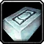
Barre d'argent18 Pyrite9
Pyrite9 Barre d'or6
Barre d'or6 Pierre de gardien3
Pierre de gardien3 Barre d'arcanite1
Barre d'arcanite1 Barre de vrai-argent1
Barre de vrai-argent1
Herbes — 5
Cuirs, peaux et écailles — 10
 Cuir immaculé14
Cuir immaculé14 Cuir enchanté11
Cuir enchanté11 Cuir robuste11
Cuir robuste11 Cuir lourd9
Cuir lourd9 Cuir léger6
Cuir léger6 Cuir épais5
Cuir épais5 Cuir moyen3
Cuir moyen3 Peau immaculée2
Peau immaculée2 Écaille immaculée2
Écaille immaculée2 Cuir du Magma1
Cuir du Magma1
Tissus — 21
 Rouleau d'étoffe runique137
Rouleau d'étoffe runique137 Bobine de fil raffiné103
Bobine de fil raffiné103 Fil runique102
Fil runique102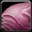
Rouleau d'étoffe de soie90 Bobine de soie lourde81
Bobine de soie lourde81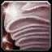
Rouleau de tisse-mage71 Rouleau d'étoffe de laine47
Rouleau d'étoffe de laine47 Etoffe lunaire46
Etoffe lunaire46 Rouleau d'étoffe en lin44
Rouleau d'étoffe en lin44 Soie d'araignée toilacier40
Soie d'araignée toilacier40- Bobine de soie39
 Bobine de fil grossier36
Bobine de fil grossier36 Gangrétoffe15
Gangrétoffe15- Soie d'araignée13
- Soie des ténèbres6
- Soie d'araignée épaisse4
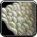
Etoffe de laine1 Etoffe de lin1
Etoffe de lin1 Etoffe de soie1
Etoffe de soie1 Etoffe de tisse-mage1
Etoffe de tisse-mage1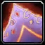
Etoffe runique1
Éléments et matériaux d’enchantement — 24
 Essence malléable de la nature21
Essence malléable de la nature21 Essence astrale supérieure18
Essence astrale supérieure18 Globe d'eau16
Globe d'eau16 Coeur de feu13
Coeur de feu13 Essence d'eau12
Essence d'eau12 Essence de feu12
Essence de feu12 Essence du néant supérieure12
Essence du néant supérieure12 Essence de terre11
Essence de terre11 Terre élémentaire9
Terre élémentaire9 Gros éclat irradiant8
Gros éclat irradiant8 Essence de vie6
Essence de vie6 Petit éclat brillant6
Petit éclat brillant6 Essence d'air4
Essence d'air4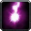
Essence mystique inférieure4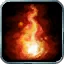
Feu élémentaire4 Grand éclat brillant4
Grand éclat brillant4 Coeur de fauve3
Coeur de fauve3 Essence de non-mort3
Essence de non-mort3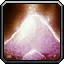
Poussière de rêve3 Eau élémentaire2
Eau élémentaire2 Air élémentaire1
Air élémentaire1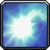
Essence éternelle supérieure1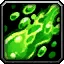
Ichor de non-mort1 Poussière de vision1
Poussière de vision1
Pièces d’ingénierie — 1
Fils, fioles, teintures et autres composants — 36
 Teinture céruléenne96
Teinture céruléenne96 Teinture magenta40
Teinture magenta40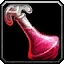
Teinture rouge26 Teinture bleue15
Teinture bleue15 Décolorant12
Décolorant12 Huile de feu12
Huile de feu12 Petite perle satinée11
Petite perle satinée11 Teinture fantôme11
Teinture fantôme11 Teinture verte10
Teinture verte10 Oeil ténébreux9
Oeil ténébreux9 Perle noire9
Perle noire9 Teinture viridienne9
Teinture viridienne9 Perle dorée7
Perle dorée7 Noyau de feu5
Noyau de feu5 Teinture grise5
Teinture grise5 Rune de givre4
Rune de givre4 Rune démoniaque4
Rune démoniaque4 Rune ténébreuse4
Rune ténébreuse4 Noyau de lave3
Noyau de lave3 Perle iridescente3
Perle iridescente3 Teinture noire3
Teinture noire3 Bois simple2
Bois simple2 Mojo puissant2
Mojo puissant2 Rubis étoilé2
Rubis étoilé2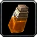
Teinture orange2 Teinture pourpre2
Teinture pourpre2 Citrine1
Citrine1 Diamant d'Azeroth1
Diamant d'Azeroth1 Ecaille de naga1
Ecaille de naga1 Jade1
Jade1 Longue plume élégante1
Longue plume élégante1- Orbe de piété1
 Tanin ogre1
Tanin ogre1- Teinture jaune1
 Teinture rose1
Teinture rose1 Énorme émeraude1
Énorme émeraude1
Objets utilisés comme composants — 10
 Potion de mana2
Potion de mana2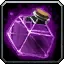
Potion de protection contre l'Ombre2 Cris en bouteille1
Cris en bouteille1 Elixir de Sagesse1
Elixir de Sagesse1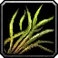
Fibre d'aurore1 Huile des ténèbres1
Huile des ténèbres1 Huile glaciale1
Huile glaciale1 Potion de mana mineure1
Potion de mana mineure1 Potion de soins1
Potion de soins1 Potion de soins mineure1
Potion de soins mineure1
Composants de chaque recette · 401 recettes
Historique des corrections
- 12 novembre 2026 (brouillon, non validé) : première liste complète des recettes de ce métier, d’après des données extraites du client, avec mention « à confirmer ». Aucune publication.[4][1]
- 13 novembre 2026 : « à confirmer » retiré des faits trouvés dans les fichiers du jeu (client 1.60.1.70862), décision t359u. L’obtention « inconnu », les zones non indiquées, les sources sans tampon de build et les valeurs seulement déduites restent à confirmer. Ce n’est pas une confirmation officielle de Blizzard, ni une mise en ligne.[4] Données du jeu (client 1.60.1.70862)
- 14 novembre 2026 : liens internes vers les fiches déjà publiées (bestiaires, listes de recettes, donjons) — lot v40, t361u. Aucun fait nouveau.[1][2][3][4]
- 17 novembre 2026 (v42) : ajout de la section « Matériaux : où les trouver » (composants de chaque recette, lus dans les fichiers du jeu, client 1.60.1.70862).[5] Données du jeu (client 1.60.1.70862)
Ce qui est confirmé / ce qui reste à confirmer
Confirmé par les sources officielles
Reste à confirmer
- Liste officielle complète des recettes, matériaux, prix et formateurs nommés : non publiée par Blizzard.
- Pour une partie des recettes, l’obtention, la source ou la zone n’était pas indiquée dans les données consultées ; ces cellules restent à « non indiqué ».
- Taux de butin : non indiqués dans les données consultées, et non publiés officiellement.
Dates clés
Sources
- [1] Récapitulatif de la présentation « Au cœur de World of Warcraft: Forever » (FR) · publié le · consulté le
World of Warcraft: Forever Deep Dive Panel Recap (EN) · publié le · consulté le - [2] Retrouvez-vous autour d’un feu de camp dans World of Warcraft: Forever (FR) · publié le · consulté le
Gather Around the Campfire in World of Warcraft: Forever (EN) · publié le · consulté le - [3] WoW: Forever Hotfixes - November 11, 2026 (EN) · publié le · consulté le
- [4] Guide Couture — liste des recettes (données du jeu (client 1.60.1.70862) (FR) · date de publication non indiquée · consulté le
Tailoring profession guide — full recipe list (game data (client 1.60.1.70862) (EN) · date de publication non indiquée · consulté le Données du jeu — client 1.60.1.70862 - [5] WoW Forever client files, build 1.60.1.70862 — data tables and icons read from Blizzard’s official CDN (EN) · date de publication non indiquée · consulté le Données du jeu — client 1.60.1.70862
Sources officielles Blizzard Entertainment (droits réservés). Ce wiki en propose une synthèse originale ; seules de courtes citations sont reproduites. Les informations annoncées peuvent évoluer avant ou après le lancement. Les sources marquées « données du jeu » viennent des fichiers du client WoW Forever (build 1.60.1.70862). Ce n’est pas une confirmation officielle de Blizzard.
Version documentaire : World of Warcraft: Forever — annonces officielles et fichiers du jeu (client 1.60.1.70862), état documentaire 2026-11-17 · révision 17